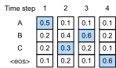

Tìm Kiếm Chùm¶
Trong sec_seq2seq, chúng ta đã giới thiệu kiến trúc bộ mã hóa--bộ giải mã, và các kỹ thuật tiêu chuẩn để huấn luyện chúng từ đầu đến cuối. Tuy nhiên, khi dự đoán trong thời gian kiểm tra, chúng ta chỉ đề cập đến chiến lược tham lam, trong đó tại mỗi bước thời gian chúng ta chọn token được cho xác suất dự đoán cao nhất của việc đến tiếp theo, cho đến khi, tại một bước thời gian nào đó, chúng ta thấy rằng đã dự đoán token kết-chuỗi đặc biệt "<eos>". Trong phần này, chúng ta sẽ bắt đầu bằng cách hình thức hóa chiến lược tìm kiếm tham lam này và xác định một số vấn đề mà các nhà thực hành thường gặp phải. Sau đó, chúng ta so sánh chiến lược này với hai giải pháp thay thế: tìm kiếm toàn diện (minh họa nhưng không thực tế) và tìm kiếm chùm (phương pháp tiêu chuẩn trong thực tế).
Hãy bắt đầu bằng cách thiết lập ký hiệu toán học của chúng ta, mượn quy ước từ sec_seq2seq. Tại bất kỳ bước thời gian \(t'\) nào, bộ giải mã xuất ra các dự đoán đại diện cho xác suất của mỗi token trong từ vựng đến tiếp theo trong chuỗi (giá trị có khả năng của \(y_{t'+1}\)), điều kiện hóa trên các token trước \(y_1, \ldots, y_{t'}\) và biến ngữ cảnh \(\mathbf{c}\), được tạo ra bởi bộ mã hóa để biểu diễn chuỗi đầu vào. Để định lượng chi phí tính toán, ký hiệu bởi \(\mathcal{Y}\) từ vựng đầu ra (bao gồm token kết-chuỗi đặc biệt "<eos>"). Hãy cũng chỉ định số lượng token tối đa của một chuỗi đầu ra là \(T'\). Mục tiêu của chúng ta là tìm kiếm đầu ra lý tưởng từ tất cả \(\mathcal{O}(\left|\mathcal{Y}\right|^{T'})\) chuỗi đầu ra có thể. Lưu ý rằng điều này ước tính hơi quá mức số lượng đầu ra phân biệt vì không có token tiếp theo khi token "<eos>" xảy ra. Tuy nhiên, với mục đích của chúng ta, con số này nắm bắt gần đúng kích thước của không gian tìm kiếm.
Tìm Kiếm Tham Lam¶
Xét chiến lược tìm kiếm tham lam đơn giản từ sec_seq2seq. Ở đây, tại bất kỳ bước thời gian \(t'\) nào, chúng ta đơn giản chọn token với xác suất có điều kiện cao nhất từ \(\mathcal{Y}\), tức là,
Khi mô hình của chúng ta xuất ra "<eos>" (hoặc chúng ta đạt độ dài tối đa \(T'\)) chuỗi đầu ra hoàn chỉnh.
Chiến lược này có vẻ hợp lý, và trên thực tế nó không tệ lắm! Xét việc nó đơn giản về mặt tính toán đến mức nào, bạn sẽ khó có thể đạt được hiệu quả hơn với ít chi phí hơn. Tuy nhiên, nếu chúng ta bỏ qua hiệu quả trong một phút, có vẻ hợp lý hơn khi tìm kiếm chuỗi có khả năng nhất, không phải chuỗi (được chọn tham lam) của các token có khả năng nhất. Hóa ra là hai đối tượng này có thể khá khác nhau. Chuỗi có khả năng nhất là chuỗi tối đa hóa biểu thức \(\prod_{t'=1}^{T'} P(y_{t'} \mid y_1, \ldots, y_{t'-1}, \mathbf{c})\). Trong ví dụ dịch máy của chúng ta, nếu bộ giải mã thực sự phục hồi các xác suất của quá trình tạo cơ bản, thì điều này sẽ cho chúng ta bản dịch có khả năng nhất. Thật không may, không có đảm bảo rằng tìm kiếm tham lam sẽ cho chúng ta chuỗi này.
Hãy minh họa bằng một ví dụ. Giả sử có bốn token "A", "B", "C" và "<eos>" trong từ điển đầu ra. Trong fig_s2s-prob1, bốn con số dưới mỗi bước thời gian đại diện cho xác suất có điều kiện của việc tạo ra "A", "B", "C", và "<eos>" tương ứng, tại bước thời gian đó.

Tại mỗi bước thời gian, tìm kiếm tham lam chọn token với xác suất có điều kiện cao nhất. Do đó, chuỗi đầu ra "A", "B", "C" và "<eos>" sẽ được dự đoán (fig_s2s-prob1). Xác suất có điều kiện của chuỗi đầu ra này là \(0.5\times0.4\times0.4\times0.6 = 0.048\).
Tiếp theo, hãy nhìn vào một ví dụ khác trong fig_s2s-prob2. Không giống như trong fig_s2s-prob1, tại bước thời gian 2 chúng ta chọn token "C", có xác suất có điều kiện cao thứ hai.

Vì các chuỗi con đầu ra tại bước thời gian 1 và 2, mà bước thời gian 3 dựa trên, đã thay đổi từ "A" và "B" trong fig_s2s-prob1 sang "A" và "C" trong fig_s2s-prob2, xác suất có điều kiện của mỗi token tại bước thời gian 3 cũng đã thay đổi trong fig_s2s-prob2. Giả sử rằng chúng ta chọn token "B" tại bước thời gian 3. Bây giờ bước thời gian 4 điều kiện hóa trên chuỗi con đầu ra tại ba bước thời gian đầu tiên "A", "C" và "B", đã thay đổi từ "A", "B" và "C" trong fig_s2s-prob1. Do đó, xác suất có điều kiện của việc tạo ra mỗi token tại bước thời gian 4 trong fig_s2s-prob2 cũng khác với trong fig_s2s-prob1. Kết quả là, xác suất có điều kiện của chuỗi đầu ra "A", "C", "B" và "<eos>" trong fig_s2s-prob2 là \(0.5\times0.3 \times0.6\times0.6=0.054\), lớn hơn xác suất của tìm kiếm tham lam trong fig_s2s-prob1. Trong ví dụ này, chuỗi đầu ra "A", "B", "C" và "<eos>" thu được bằng tìm kiếm tham lam không phải là tối ưu.
Tìm Kiếm Toàn Diện¶
Nếu mục tiêu là thu được chuỗi có khả năng nhất, chúng ta có thể xem xét sử dụng tìm kiếm toàn diện: liệt kê tất cả các chuỗi đầu ra có thể với xác suất có điều kiện của chúng, và sau đó xuất ra chuỗi đạt điểm xác suất dự đoán cao nhất.
Mặc dù điều này chắc chắn sẽ cho chúng ta những gì chúng ta muốn, nhưng nó sẽ đến với chi phí tính toán cấm đoán là \(\mathcal{O}(\left|\mathcal{Y}\right|^{T'})\), hàm mũ theo độ dài chuỗi và với cơ số khổng lồ được cho bởi kích thước từ vựng. Ví dụ, khi \(|\mathcal{Y}|=10000\) và \(T'=10\), cả hai là số nhỏ khi so sánh với các số trong ứng dụng thực tế, chúng ta sẽ cần đánh giá \(10000^{10} = 10^{40}\) chuỗi, điều này đã vượt quá khả năng của bất kỳ máy tính nào có thể tưởng tượng được. Mặt khác, chi phí tính toán của tìm kiếm tham lam là \(\mathcal{O}(\left|\mathcal{Y}\right|T')\): rẻ đến kỳ diệu nhưng xa tối ưu. Ví dụ, khi \(|\mathcal{Y}|=10000\) và \(T'=10\), chúng ta chỉ cần đánh giá \(10000\times10=10^5\) chuỗi.
Tìm Kiếm Chùm¶
Bạn có thể xem các chiến lược giải mã chuỗi như nằm trên một phổ, với tìm kiếm chùm đạt được sự thỏa hiệp giữa hiệu quả của tìm kiếm tham lam và tính tối ưu của tìm kiếm toàn diện. Phiên bản đơn giản nhất của tìm kiếm chùm được đặc trưng bởi một siêu tham số duy nhất, kích thước chùm, \(k\). Hãy giải thích thuật ngữ này. Tại bước thời gian 1, chúng ta chọn \(k\) token với xác suất dự đoán cao nhất. Mỗi cái trong số đó sẽ là token đầu tiên của \(k\) chuỗi đầu ra ứng viên, tương ứng. Tại mỗi bước thời gian tiếp theo, dựa trên \(k\) chuỗi đầu ra ứng viên tại bước thời gian trước, chúng ta tiếp tục chọn \(k\) chuỗi đầu ra ứng viên với xác suất dự đoán cao nhất từ \(k\left|\mathcal{Y}\right|\) lựa chọn có thể.

fig_beam-search minh họa quá trình tìm kiếm chùm bằng một ví dụ. Giả sử rằng từ vựng đầu ra chỉ chứa năm phần tử: \(\mathcal{Y} = \{A, B, C, D, E\}\), trong đó một trong số đó là "<eos>". Gọi kích thước chùm là hai và độ dài tối đa của chuỗi đầu ra là ba. Tại bước thời gian 1, giả sử rằng các token với xác suất có điều kiện cao nhất \(P(y_1 \mid \mathbf{c})\) là \(A\) và \(C\). Tại bước thời gian 2, với tất cả \(y_2 \in \mathcal{Y},\) chúng ta tính toán
và chọn hai giá trị lớn nhất trong số mười giá trị này, chẳng hạn \(P(A, B \mid \mathbf{c})\) và \(P(C, E \mid \mathbf{c})\). Sau đó tại bước thời gian 3, với tất cả \(y_3 \in \mathcal{Y}\), chúng ta tính toán
và chọn hai giá trị lớn nhất trong số mười giá trị này, chẳng hạn \(P(A, B, D \mid \mathbf{c})\) và \(P(C, E, D \mid \mathbf{c}).\) Kết quả là, chúng ta thu được sáu chuỗi đầu ra ứng viên: (i) \(A\); (ii) \(C\); (iii) \(A\), \(B\); (iv) \(C\), \(E\); (v) \(A\), \(B\), \(D\); và (vi) \(C\), \(E\), \(D\).
Cuối cùng, chúng ta thu được tập hợp các chuỗi đầu ra ứng viên cuối cùng dựa trên sáu chuỗi này (ví dụ: loại bỏ các phần bao gồm và sau "<eos>"). Sau đó chúng ta chọn chuỗi đầu ra tối đa hóa điểm sau:
ở đây \(L\) là độ dài của chuỗi ứng viên cuối cùng
và \(\alpha\) thường được đặt là 0.75.
Vì chuỗi dài hơn có nhiều số hạng logarit hơn
trong tổng của :eqref:eq_beam-search-score,
số hạng \(L^\alpha\) trong mẫu số phạt
các chuỗi dài.
Chi phí tính toán của tìm kiếm chùm là \(\mathcal{O}(k\left|\mathcal{Y}\right|T')\). Kết quả này nằm giữa kết quả của tìm kiếm tham lam và tìm kiếm toàn diện. Tìm kiếm tham lam có thể được coi là trường hợp đặc biệt của tìm kiếm chùm khi kích thước chùm được đặt là 1.
Tóm Tắt¶
Các chiến lược tìm kiếm chuỗi bao gồm tìm kiếm tham lam, tìm kiếm toàn diện và tìm kiếm chùm. Tìm kiếm chùm cung cấp sự đánh đổi giữa độ chính xác và chi phí tính toán thông qua lựa chọn linh hoạt kích thước chùm.
Bài Tập¶
- Chúng ta có thể coi tìm kiếm toàn diện là một loại tìm kiếm chùm đặc biệt không? Tại sao hay tại sao không?
- Áp dụng tìm kiếm chùm trong bài toán dịch máy trong sec_seq2seq. Kích thước chùm ảnh hưởng như thế nào đến kết quả dịch và tốc độ dự đoán?
- Chúng ta đã sử dụng mô hình hóa ngôn ngữ để tạo văn bản theo các tiền tố do người dùng cung cấp trong sec_rnn-scratch. Loại chiến lược tìm kiếm nào nó sử dụng? Bạn có thể cải thiện nó không?